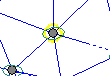
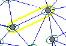

The map window has three main components:
the map, displaying stations, observations, error ellipses, vertical error bars, adjustment vectors, and background features.
the key used to display choose which features are displayed, and what colours to use
the coordinate window, which shows the coordinates of the cursor, and the code and name of the station that the cursor is over, if any
The map window is mainly operated using the mouse (or other pointing device). The following descriptions use the term "click" to mean briefly click a mouse button while the cursor is is located over a fixed point, and "drag" to mean move the mouse cursor from one point to another while holding a mouse button down. The mouse buttons are referred to as left and right. So for example left+click a point means position the cursor over a point, and click the left mouse button.
Some of the mouse operations are affected by holding down the Shift, Alt, and Ctrl keys on the keyboard at the same time. For example, Ctrl+Shift+left+drag means drag the cursor while holding down the left mouse button, and the Ctrl and Shift keys on the keyboard!
| Zoom in | Mouse: Left+drag a rectangle over the area of interest.
Note that you can move the rectangle by holding down the
shift key while dragging. |
| Zoom out | Mouse: Shift+Right click anywhere on the map Keyboard: Press Alt+Z Menu: Select View | Zoom out |
| Pan | Mouse: Shift+Left+Drag a point on the map to its position
in the panned view.
|
| View entire map | Mouse: Alt+Right+Click anywhere on the map Keyboard: Press Alt+A Menu: Select View | All |
| Undo last zoom/pan | Mouse: Right+Click anywhere on the map Keyboard: Press Alt+P Menu: Select View | Previous |
| Get station/obs information | Mouse: Left+click on the station or observation. Detailed information will be shown in the details window. Left+click on the selected station will "lock" it, so that clicking other stations will select the vector from the locked station to it. Left+click on a locked station to unlock it. Hold the Shift key down when selecting a station or observation to zoom in to it when it is selected. |
| Offset a station | Mouse: Shift+Ctrl+Left+drag to move a station to a different position. Note: this only affects where the station is displayed on the map, not its coordinates. This is used to clarify the view of the network where stations are very close. |
| Clear station offset | Mouse: Shift+Ctrl+Right+click on a station will set its offset back to zero. |
The map window interacts with the text windows (station/observation lists and details window) in a number of ways.
Left+clicking on a station or observation will give detailed information about it in the details window. The map shows the selected station or observation with a yellow outline
 Whenever the station or observation in the details window changes, the corresponding station or observation is highlighted on the map
Station and observations can also be selected by click them in the station/observation lists or on hyperlinks in the details window. Holding the shift key down while selecting stations or observations will cause the map window to zoom into the chosen item.
There are several ways to change the information displayed on the map:
Choosing to hide or display items or changing colours using the key.
Choosing different ways of colour coding observations, for example by the size of the standardised residual, by the redundancy, or by any of the observation classifications" using the Observations | Colour coding menu option
Changing the how multiple observations of a line are displayed with the Observation display options dialog using the Observations | Display options menu option.
Highlighting observations using various criteria with the Highlight observations dialog from the Observations | Highlight observations menu option.
Hiding or showing specific stations or categories of stations using the Hide stations dialog using the Stations | Hide stations menu option. Optionally the observations to and from hidden stations will also be hidden.
Highlighting specific stations or categories of stations using the Highlight stations dialog using the Stations | Highlight stations menu option.
Changing the font used to display station codes and names using the View | Select station font menu option
Changing the scaling of error ellipses and vertical error bars using the Error options dialog from the Error | Error options menu option.